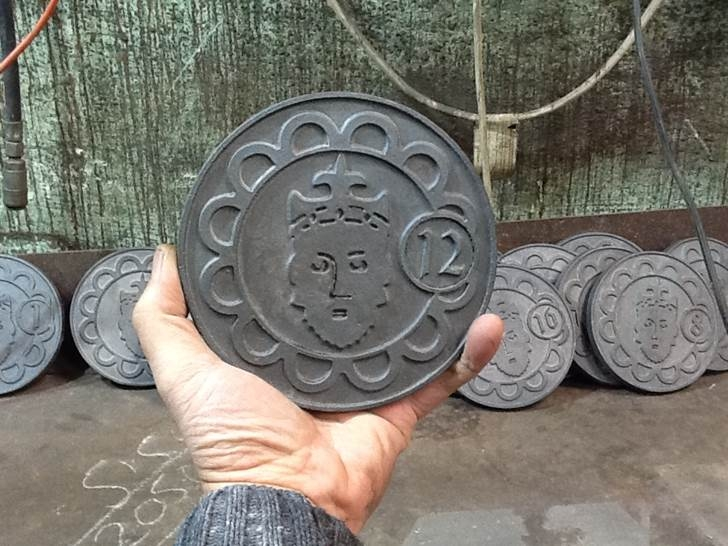
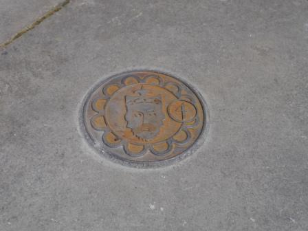

Tours
Here is your gateway to exploring medieval Swansea in the city today. Our interactive map is linked to the pavement markers you'll find in Swansea city centre, showing locations and features within the medieval town.
You can choose to follow one of our 'curated' tours (with their own numbered waypoints), or simply make your own way between markers and explore what you find. You can use the map as a guide when you're out and about in Swansea, or for a virtual tour from wherever you are in the world.
If you use the tour map on a GPS-enabled device such as a smart phone or tablet, you will be able to track your location as you move around the map.
For each marker location, you will find the following content:
- About this Place: information about the medieval location and later changes
- Location Images: a photograph of the location today, historic photographs or images, and computer visualisation of the medieval site
- Connection to the Cragh story: details about how this place links to the story of Swansea's 'hanged man'
- Object: a medieval object from the Swansea Museum collection which is associated in some way with this site
For the themed 'curated' tours, you will also find a bit of extra content attached to each waypoint, explaining how it fits into the 'story' of your tour.
|  |  |
(The medieval Swansea pavement markers)